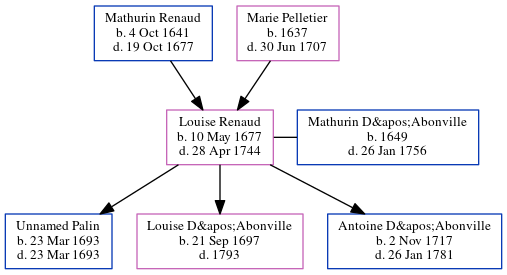

Louise Palin D'Abonville (née Renaud) 1677 - 1744
[ Home ] | [ Calendar ] | [ Surnames Index ] | [ Census Index ] | [ Family History ]The child of Mathurin Renaud and Marie Pelletier, Louise Renaud, the 7 times great-grandmother of Michele Copp (née Phillips), was born in Gros Pin, Charlesbourg, Pq on May 10, 16771,2 and married Mathurin D'Abonville (with whom she had 3 children: Unnamed Baby, Louise and Antoine) in Québec, , Quebec, Canada on Jul 23, 1691.
She died on Apr 28, 1744 in Ville De Quebec, Quebec, Pq, Canada2.
Parents
- Mathurin was born on Oct 4, 1641
- Marie was born in 1637
Children
- Unnamed Baby was born on Mar 23, 1693
- Louise was born on Sep 21, 1697
- Antoine was born on Nov 2, 1717
Citations
- Family Data Collection - Births Online publication - Provo, UT, USA: The Generations Network, Inc., 2001.
- Family Data Collection - Individual Records Online publication - Provo, UT, USA: The Generations Network, Inc., 2000.
Family Tree
Generated by ged2site. Last updated on Jun 6, 2024